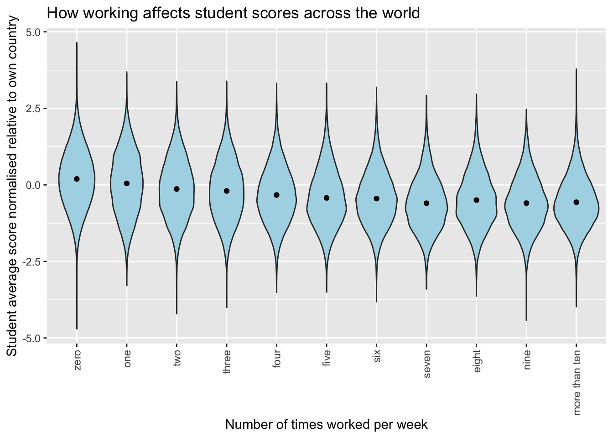
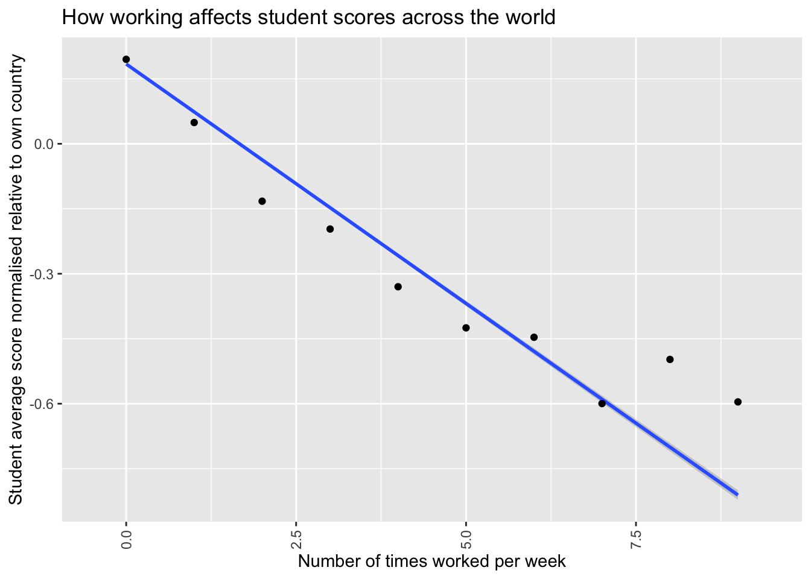
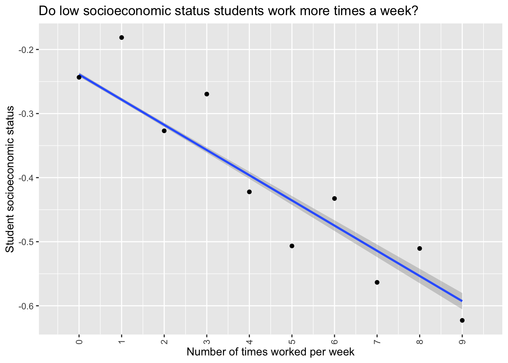

library(arrow)
library(tidyverse)
PISA_2022 <- read_parquet(r"[PISA_student_2022_subset.parquet]")
avg_score <- PISA_2022 %>%
select(CNT, PV1MATH, PV1READ, PV1SCIE, WORKPAY) %>%
mutate(SCORE_AVG = ((PV1MATH + PV1READ + PV1SCIE)/3)) %>%
group_by(CNT) %>%
mutate(CNT_AVG_SCORE = mean(SCORE_AVG)) %>%
mutate(CNT_SD_SCORE = sd(SCORE_AVG)) %>%
ungroup() %>%
mutate(STU_REL_SCORE = ((SCORE_AVG-CNT_AVG_SCORE)/CNT_SD_SCORE)) %>%
select(CNT, SCORE_AVG, CNT_AVG_SCORE, CNT_SD_SCORE, STU_REL_SCORE, WORKPAY) %>%
filter(!is.na(WORKPAY))DOES WORKING A JOB IMPACT STUDENT PERFORMANCE?
PURPOSE
Looking through the questions asked on the PISA_2022 dataset I saw that the number of times a student had worked a job during the week was included as WORKPAY. I was interested to see if this had an effect on their scores in the tested domains of reading, maths and science. I had a couple of hypothesis to check that work in opposite directions.
Hypothesis 1 - A Positive Correlation
Working in free time during non-school hours displays a strong work ethic and hence that same work ethic could be applied to school work too.
Hypothesis 2 - A Negative Correlation
Working in their free time has an opportunity cost, every hour spent working is an hour that could have been spent studying, resulting in a negative impact on PISA score.
The Statistical Methodology
Using R I took the PISA 2022 dataset, averaged the three scores (reading PV1READ, maths PV1MATH and science PV1SCIE) of each pupil to get a total score for each pupil (SCORE_AVG).
I realised that certain countries with different levels of economic development and different cultures surrounding children working may also have different PISA scores so I came up with a modified pupil score relative to the scores of their own country, this score represents the number of standard deviations a student is away from the average score of their own country (STU_REL_SCORE) so for example a value of -0.55 would mean that student had an average score in the three domains that was 0.55 standard deviations below the country average score. This was then compared against the number of times a student had worked during the week (WORKPAY).
Here is the code:
When plotted this results in the following graph:
# Define a custom function to map original levels to shorter labels
map_workpay_labels <- function(original_label) {
# Define mapping for each level
level_mapping <- c(
"No work for pay" = "zero",
"1 time of working for pay per week" = "one",
"2 times of working for pay per week" = "two",
"3 times of working for pay per week" = "three",
"4 times of working for pay per week" = "four",
"5 times of working for pay per week" = "five",
"6 times of working for pay per week" = "six",
"7 times of working for pay per week" = "seven",
"8 times of working for pay per week" = "eight",
"9 times of working for pay per week" = "nine",
"10 or more times of working for pay per week" = "more than ten"
)
# Use the level_mapping to map the original_label to the shorter label
return(level_mapping[original_label])
}
# Apply the custom function to the "WORKPAY" column
avg_score$WORKPAY <- sapply(avg_score$WORKPAY, map_workpay_labels)
# Convert "WORKPAY" to a factor with desired order of levels
avg_score$WORKPAY <- factor(avg_score$WORKPAY, levels = c("zero", "one", "two", "three", "four", "five", "six", "seven", "eight", "nine", "more than ten"))
ggplot(data = avg_score,
aes(x=WORKPAY, y=STU_REL_SCORE)) +
geom_violin(fill="lightblue")+
ggtitle("How working affects student scores across the world")+
theme(axis.text.x = element_text(angle = 90, vjust = 0.5, hjust = 1)) +
xlab("Number of times worked per week") +
ylab("Student average score normalised relative to own country") +
stat_summary(fun = "mean", geom = "point", color = "black",
position = position_dodge(width=0.9))
In which there does seem to be a negative correlation between number of times a student works and their relative score.
This is made clearer if we remove the violin distribution plots and just look at the averages. The times worked per week as contained within the PISA dataset is a categoric variable so in order to do a linear plot it needs to be made into a numeric variable first so the little bit of code below does that before then plotting a line graph.
avg_score <- PISA_2022 %>%
select(CNT, PV1MATH, PV1READ, PV1SCIE, WORKPAY, ESCS) %>%
mutate(SCORE_AVG = ((PV1MATH + PV1READ + PV1SCIE)/3)) %>%
group_by(CNT) %>%
mutate(CNT_AVG_SCORE = mean(SCORE_AVG)) %>%
mutate(CNT_SD_SCORE = sd(SCORE_AVG)) %>%
ungroup() %>%
mutate(STU_REL_SCORE = ((SCORE_AVG-CNT_AVG_SCORE)/CNT_SD_SCORE)) %>%
select(CNT, SCORE_AVG, CNT_AVG_SCORE, CNT_SD_SCORE, STU_REL_SCORE, WORKPAY,ESCS) %>%
mutate(WORKPAY_numeric =
case_when(WORKPAY == "No work for pay" ~ 0,
WORKPAY == "1 time of working for pay per week" ~ 1,
WORKPAY == "2 times of working for pay per week" ~ 2,
WORKPAY == "3 times of working for pay per week" ~ 3,
WORKPAY == "4 times of working for pay per week" ~ 4,
WORKPAY == "5 times of working for pay per week" ~ 5,
WORKPAY == "6 times of working for pay per week" ~ 6,
WORKPAY == "7 times of working for pay per week" ~ 7,
WORKPAY == "8 times of working for pay per week" ~ 8,
WORKPAY == "9 times of working for pay per week" ~ 9,
WORKPAY == "10 or more times of working for pay per week" ~ NA,
.default = NA)) %>%
filter(!is.na(WORKPAY_numeric))
ggplot(data = avg_score,
aes(x=WORKPAY_numeric, y=STU_REL_SCORE)) +
geom_smooth(method = 'lm')+
scale_x_continuous(breaks = 0:10)+
ggtitle("How working affects student scores across the world")+
theme(axis.text.x = element_text(angle = 90, vjust = 0.5, hjust = 1)) +
xlab("Number of times worked per week") +
ylab("Student average score normalised relative to own country") +
stat_summary(fun = "mean", geom = "point", color = "black",
position = position_dodge(width=0.9))
Which does show more clearly a negative correlation between times worked per week when times is less than 5. The correlation gets a little more noisy after that. I speculate this is because working more than 5 times per week would mean working more than every weekday, which might mean students answering the questionnaire with larger numbers may be defining a “working” period differently than those answering with smaller values or perhaps have misread the question making the data noisier for values over 5.
One thing in discussion with Peter and Richard I realised was that this model while it takes account of differences in economic status by country, it does not take into account differences in socioeconomic status between students. It is completely plausible that even within a country poorer students might be having to work more than richer ones, and it is fairly established that students with lower socioeconomic status get lower scores on PISA tests (Tessier 2018). This might mean that all we are seeing in this graph is that effect, rather than any effect from working in a job. To remedy this we can adapt our model to control for socioeconomic status (ESCS).
CONTROLING FOR SOCIOECONOMIC STATUS (ESCS)
First of all let’s see if there is a relationship between a student working in a job and their ESCS.
escs_vs_work <- PISA_2022 %>%
select(WORKPAY, ESCS) %>%
mutate(WORKPAY_numeric =
case_when(WORKPAY == "No work for pay" ~ 0,
WORKPAY == "1 time of working for pay per week" ~ 1,
WORKPAY == "2 times of working for pay per week" ~ 2,
WORKPAY == "3 times of working for pay per week" ~ 3,
WORKPAY == "4 times of working for pay per week" ~ 4,
WORKPAY == "5 times of working for pay per week" ~ 5,
WORKPAY == "6 times of working for pay per week" ~ 6,
WORKPAY == "7 times of working for pay per week" ~ 7,
WORKPAY == "8 times of working for pay per week" ~ 8,
WORKPAY == "9 times of working for pay per week" ~ 9,
WORKPAY == "10 or more times of working for pay per week" ~ NA,
.default = NA)) %>%
filter(!is.na(WORKPAY_numeric)) %>%
filter(!is.na(ESCS))
ggplot(data = escs_vs_work,
aes(x=WORKPAY_numeric, y=ESCS)) +
geom_smooth(method = 'lm')+
scale_x_continuous(breaks = 0:10)+
ggtitle("Do low socioeconomic status students work more times a week?")+
theme(axis.text.x = element_text(angle = 90, vjust = 0.5, hjust = 1)) +
xlab("Number of times worked per week") +
ylab("Student socioeconomic status") +
stat_summary(fun = "mean", geom = "point", color = "black",
position = position_dodge(width=0.9))
Clearly there is a negative correlation, students who work more times per week are also of lower socioeconomic status. An interesting aside that I cannot explain is that odd working times per week lower than 5 have higher ESCS and even working times above 5 have higher ESCS. I think this may be because the WORKPAY category is a composite category made from two questions “How many times in the last week did you work for pay after school?” and “How many times in the last week did you work for pay before school?” This is pure speculation but perhaps there is some difference in ESCS between students who work before and after school, and the way the two questions are being aggregated is showing that up. I could possibly use the full PISA data set to look at the responses to those individual questions but that would perhaps be a distraction from the current investigation.
Let’s compare the correlations between WORKPAY and ESCS to see how much they are correlated.
cor.test(escs_vs_work$WORKPAY_numeric, escs_vs_work$ESCS, method = "pearson")
Pearson's product-moment correlation
data: escs_vs_work$WORKPAY_numeric and escs_vs_work$ESCS
t = -50.101, df = 529231, p-value < 2.2e-16
alternative hypothesis: true correlation is not equal to 0
95 percent confidence interval:
-0.07138745 -0.06602455
sample estimates:
cor
-0.06870649 While the relationship is incredibly significant (p < 2.2e-16), there is only a small negative correlation (-0.0687). Let’s compare this with the correlation between WORKPAY and STU_REL_SCORE.
cor.test(avg_score$WORKPAY_numeric, avg_score$STU_REL_SCORE, method = "pearson")
Pearson's product-moment correlation
data: avg_score$WORKPAY_numeric and avg_score$STU_REL_SCORE
t = -163.69, df = 537551, p-value < 2.2e-16
alternative hypothesis: true correlation is not equal to 0
95 percent confidence interval:
-0.2204415 -0.2153489
sample estimates:
cor
-0.2178967 Again an incredibly significant result (p < 2.2e-16), but this time the correlation is more than 3 times greater (-0.218). We are not done as we should do a final correlation test between ESCS and STU_REL_SCORE to be able to see how much of a difference the two variables have compared to each other.
cor.test(avg_score$ESCS, avg_score$STU_REL_SCORE, method = "pearson")
Pearson's product-moment correlation
data: avg_score$ESCS and avg_score$STU_REL_SCORE
t = 237.46, df = 529231, p-value < 2.2e-16
alternative hypothesis: true correlation is not equal to 0
95 percent confidence interval:
0.3078603 0.3127298
sample estimates:
cor
0.3102971 Once again incredibly significant (p < 2.2e-16), the correlation is similar to the WORKPAY correlation but about 50% higher (0.310) and positive instead of negative. Given the negligible correlation between WORKPAY and ESCS and the weak to moderate correlations between WORKPAY, ESCS and STU_REL_SCORE we can be fairly confident that WORKPAY does have an effect on STU_REL_SCORE. However to find out how much of a effect WORKPAY is having we can do a multiple linear regression controlling for ESCS.
library(easystats)
model <- lm(STU_REL_SCORE ~ WORKPAY_numeric + ESCS,
data=avg_score)
summary(model)
Call:
lm(formula = STU_REL_SCORE ~ WORKPAY_numeric + ESCS, data = avg_score)
Residuals:
Min 1Q Median 3Q Max
-4.8889 -0.6290 -0.0027 0.6252 4.3940
Coefficients:
Estimate Std. Error t value Pr(>|t|)
(Intercept) 0.2518582 0.0014245 176.8 <2e-16 ***
WORKPAY_numeric -0.1003225 0.0006479 -154.9 <2e-16 ***
ESCS 0.2622097 0.0011323 231.6 <2e-16 ***
---
Signif. codes: 0 '***' 0.001 '**' 0.01 '*' 0.05 '.' 0.1 ' ' 1
Residual standard error: 0.9163 on 529230 degrees of freedom
(8320 observations deleted due to missingness)
Multiple R-squared: 0.1355, Adjusted R-squared: 0.1355
F-statistic: 4.146e+04 on 2 and 529230 DF, p-value: < 2.2e-16report(model)We fitted a linear model (estimated using OLS) to predict STU_REL_SCORE with
WORKPAY_numeric and ESCS (formula: STU_REL_SCORE ~ WORKPAY_numeric + ESCS). The
model explains a statistically significant and moderate proportion of variance
(R2 = 0.14, F(2, 529230) = 41459.59, p < .001, adj. R2 = 0.14). The model's
intercept, corresponding to WORKPAY_numeric = 0 and ESCS = 0, is at 0.25 (95%
CI [0.25, 0.25], t(529230) = 176.81, p < .001). Within this model:
- The effect of WORKPAY numeric is statistically significant and negative (beta
= -0.10, 95% CI [-0.10, -0.10], t(529230) = -154.85, p < .001; Std. beta =
-0.20, 95% CI [-0.20, -0.20])
- The effect of ESCS is statistically significant and positive (beta = 0.26,
95% CI [0.26, 0.26], t(529230) = 231.56, p < .001; Std. beta = 0.30, 95% CI
[0.29, 0.30])
Standardized parameters were obtained by fitting the model on a standardized
version of the dataset. 95% Confidence Intervals (CIs) and p-values were
computed using a Wald t-distribution approximation.So, even when taking into account the household socioeconomic status there is a small but significant effect of a student having to work during the weekdays. This model explains 14% of the variance in STU_REL_SCORE. Combined with the discoveries above that WORKPAY has little correlation with ESCS we can be fairly confident in it’s effect on student outcomes.
To summarise; maybe if I hadn’t worked at Homebase when I was 17 years old I’d have got an A in my chemistry A-level instead of a B.
References
Tessier, Rebecca. 2018. “Equity in Education: Breaking down Barriers to Social Mobility.”